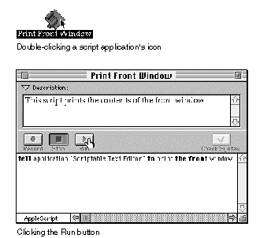

Who Runs Scripts, and Who Writes Them?
To run a script is to cause the actions the script describes to be performed. Everyone who uses a Macintosh computer can run scripts. Figure 1-4 illustrates two ways to run a script.Figure 1-4 Different ways to run a script

If the script is a script application on the desktop, you can run it by doubleclicking its icon. You can also run any script by clicking the Run button in the Script Editor window for that script.
Although everyone can run scripts, not everyone needs to write them. One person who is familiar with a scripting language can create sophisticated scripts that many people can use. For example, management information specialists in a business can write scripts for everyone in the business to use. Scripts are also sold commercially, included with applications, and distributed through electronic bulletin boards and user groups.